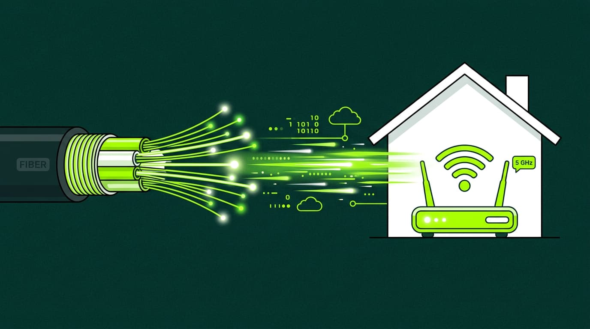

Apps
La fibra óptica se utiliza principalmente en:

- Telecomunicaciones: para transmitir datos a alta velocidad.
- Internet: para conexiones de banda ancha.
- Televisión por cable: para ofrecer canales de alta definición.
- Redes de área local (LAN): para conectar dispositivos en empresas y hogares.
- Medicina: en endoscopios y otros equipos médicos.
- Industria: para sensores y sistemas de control.
Volver al inicio